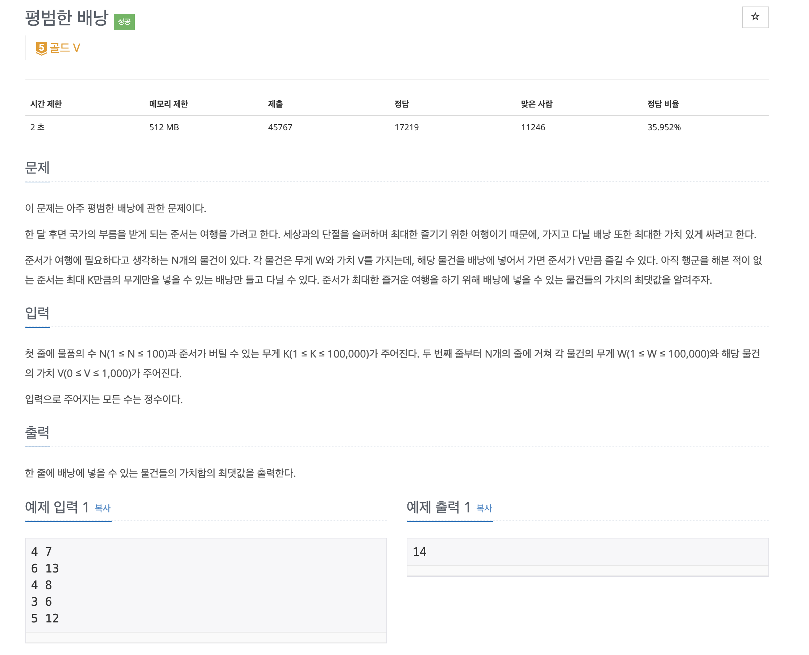

[Algorithm] Knapsack
▶️ 냅색 알고리즘 (Knapsack)
냅색 알고리즘은 동적 프로그래밍(Dynamic Programming)의 일종으로 여러개의 항목이 있을때 조건에 맞는 조합을 구하는 문제이다
대표적으로 배낭문제가 있다
▷ 냅색 알고리즘 문제

const fs = require("fs");
const filePath = process.platform === "linux" ? "/dev/stdin" : "./15_12865.txt";
let input = fs.readFileSync(filePath).toString().trim().split("\n");
const n = parseInt(input[0].split(" ")[0]);
const k = parseInt(input.shift().split(" ")[1]);
input = input.map(item => item.split(" ").map(item2 => +item2));
// 누적 가치를 저장할 배열 dy
const dy = new Array(k+1).fill(0);
// 물건들의 개수만큼
for(let i = 0; i < n; i++){
// 중복이 되면 안되기 때문에 뒤에서부터 탐색
for(let j = k; j >= input[i][0]; j--){
dy[j] = Math.max(dy[j], dy[j - input[i][0]] + input[i][1]);
}
}
// dy(누적 가치)중 가장 큰값을 출력
console.log(Math.max(...dy))
먼저 동적프로그래밍 문제이므로 누적 가치를 저장해서 다음 계산에 이용할 배열 dy를 선언한다
dy[i]: i 무게까지 물건을 담았을때 최대가 되는 가치
dy를 채우기 위해서 이중for문을 사용한다- 바깥의
for문은 물건의 개수만큼 반복한다(물건의 무게마다 값을 계산하기 때문에) - 내부
for문은 현재 i 인덱스(물건의 무게)를 이용해서dy를 계산하게 되는데 이때 거꾸로 계산하게 된다- 동적 프로그래밍 문제이므로 앞의 게산값을 이용하게 되는데 만약 앞에서부터 순차적으로 계산을 해주게 되면 중복이 허용된다(물건은 하나씩이므로 두개가 될 수 없음!)
- 가장 뒤에서 부터 해당 무게(i)까지 계산해준다
dy[j]는 현재의dy[j]와 현재 무게에서 외부의 for문에서 선택된 물건의 무게를 빼준 항목에 현재 선택된 물건의 가치를 더해준 것과 비교해서 더 가치가 큰 값을 선택한다for문이 정상적으로 완료되면 계산할 수 있는 dy들이 모두 채워지고, 이때 가장 큰 값이 가방에 담을 수 있는 가장 큰 가치가 된다!